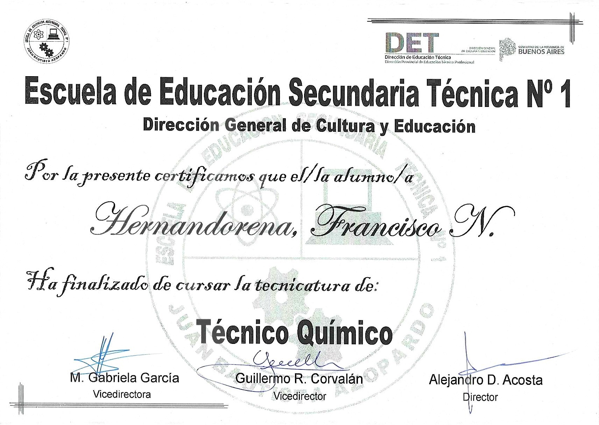
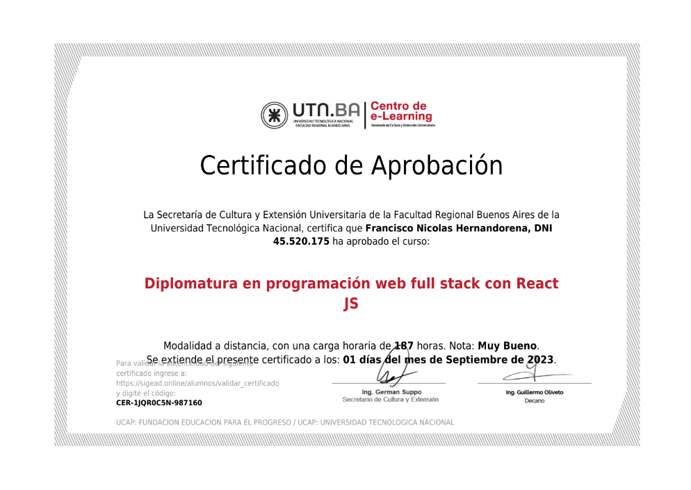

-
Secondary studies
In 2022 I graduated as a Chemical Technician at the Technical Secondary Education School No. 1.

There were 7 years studying double or triple shifts combined with a workshop from the first to the third year and from the fourth to the seventh year combined with the laboratory, considered the best in the area.
Attached certificates:
-
Programming
Throughout 2023 I took the front-end web development course at the UTN. I understand and use HTML and CSS perfectly.
Furthermore, after finishing the course I dedicated myself completely to JavaScript, generating increasingly advanced knowledge.
Github repositories:
Curriculum website repository
JavaScript proyects:
Division of expenses! (only in Spanish)
Web paint with canvas! (only compatible with computers) -
Front-End Web Development
At the UTN of Buenos Aires I completed a diploma in full stack web development with react JS with a workload of 187 hours.

It concluded with the creation of a fully functional Front-End web page, with images, form submissions and server connections.
Github repositories:
Front-End web development diploma tasks repository
Final work repository for Front-End web development diploma
Attached certificate: -
Graphic Design
I took the basic graphic design course at the UTN of Buenos Aires with a course load of 87 hours, based on the full use of Adobe Photoshop and Adobe Illustrator tools.
Attached certificate:
-
Languages
-
English
I studied English for 5 years at the "De Analia" Institute.
I currently have a very good command of the language, although I normally do not use it on a day-to-day basis.
Attached certificates:

-
Italian
At the beginning of 2023 I started studying Italian, at the Italian Society in my city. Today, I continue with the course and progress in my learning.
-